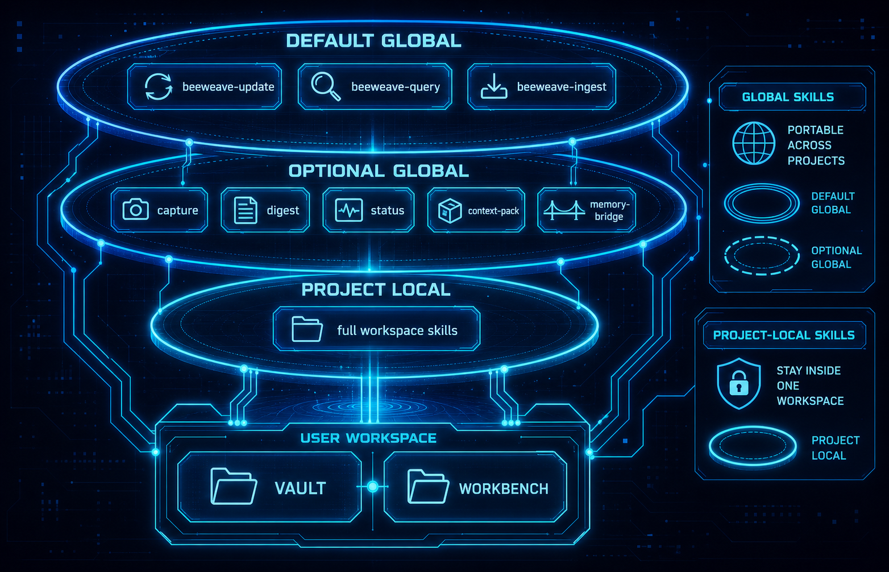

Skills¶
BeeWeave skills are agent-facing workflows. They let agents move material between the workbench, vault, and active project context.
Default Global Skills¶
beeweave-update: sync useful project knowledge into the vault.beeweave-query: answer questions from compiled vault context.beeweave-ingest: process source material into durable notes.
These are installed globally by default for supported agents because they are portable and useful across projects.
Optional Advanced Global Skills¶
Install advanced skills explicitly:
Examples include:
beeweave-capturebeeweave-context-packbeeweave-digestbeeweave-statusbeeweave-memory-bridge
Project-local Skills¶
The full BeeWeave skill set is installed project-locally for selected agents. This keeps unrelated projects clean while giving the BeeWeave workspace the complete workflow surface.
Workbench/project-local skills include:
beeweave-article-illustration: set up and run article illustration throughbaoyu-article-illustratorandbaoyu-image-gen, always using API image generation rather than runtime-native image tools.beeweave-article-writer: draft long-form articles, blog posts, essays, and opinion pieces.beeweave-article-publisher: move finished drafts toworkbench/articles/published/and ingest published work into the vault.beeweave-ppt-writer: create HTML PPT decks underworkbench/ppt/, using external PPT skills such asguizang-ppt-skillwhen needed.beeweave-social-writer: draft X/Twitter posts, threads, short takes, and social copy.beeweave-writing-style-initializer: initialize Workbench writing style asset templates underworkbench/writing/style/.beeweave-writing-style-learner: extract pending writing style rules from historical articles, trace bundles, revision diffs, user-directed AI rewrites, manual edits, and explicit feedback.beeweave-writing-skill-evolver: review pending writing rules, assign route/instruction/resource layers, validate, activate, reject, roll back, and compact style assets.beeweave-url-capture: download a URL intoworkbench/inbox/web/as a self-contained raw capture bundle, then hand off to/beeweave-ingest workbench/inbox.baoyu-url-to-markdown: bundled project-local URL extraction dependency used bybeeweave-url-capture; it is not installed as a default global skill.
See Self-Evolving Writing Workflow for the complete writing style initialization, learning, trace, evolution, publishing, cleanup, and compaction workflow.
External Skills¶
External skills are user-installed third-party agent skills managed by
bwe external. They are stored outside BeeWeave runtime folders:
~/.beeweave/external/
+-- repos/ # cloned source repositories
+-- skills/ # stable skill-name entries
+-- manifest.json
Install one external skill and link it into the current workspace:
bwe external install https://github.com/op7418/guizang-ppt-skill \
--skill guizang-ppt-skill \
--link-project .
For multi-skill repositories, specify --skill or --path; BeeWeave does not
install every skill from a repository unless --all is explicit.
External skills are not bundled into the BeeWeave wheel, source .skills/
directory, vault, or workbench. Use bwe external list and
bwe external info <skill-name> to inspect what is installed locally.
Article Illustration Setup¶
Use beeweave-article-illustration when a workspace needs article images. The
skill installs and links both required Baoyu upstream skills:
bwe external install https://github.com/jimliu/baoyu-skills \
--skill baoyu-article-illustrator \
--link-project .
bwe external install https://github.com/jimliu/baoyu-skills \
--skill baoyu-image-gen \
--link-project .
The setup writes project-level Baoyu configuration under ./.baoyu-skills/
relative to the current workspace/project root and pins
baoyu-article-illustrator to preferred_image_backend:
baoyu-image-gen. It does not configure Codex imagegen, Cursor
GenerateImage, Hermes image_generate, or other runtime-native image tools.
The fixed output layout is article-local imgs/: agents first normalize a
Markdown file into its own article directory when needed, then let Baoyu insert
relative image links such as imgs/NN-{type}-{slug}.png.
The image provider is selected from API providers supported by
baoyu-image-gen, such as OpenAI, Google, DashScope, OpenRouter, Azure, Z.AI,
MiniMax, Replicate, Jimeng, Seedream, or Agnes. Store provider credentials in
./.baoyu-skills/.env under the current workspace/project root, and do not
commit that file.
Custom provider endpoints are supported through the same env file using the
upstream variables such as OPENAI_BASE_URL, GOOGLE_BASE_URL,
OPENROUTER_BASE_URL, DASHSCOPE_BASE_URL, ZAI_BASE_URL,
MINIMAX_BASE_URL, REPLICATE_BASE_URL, JIMENG_BASE_URL,
SEEDREAM_BASE_URL, AGNES_BASE_URL, or Azure's required
AZURE_OPENAI_BASE_URL.
After provider configuration is created or updated, run the non-billing doctor:
The doctor writes ./.baoyu-skills/doctor.json and future illustration requests
reuse that passed cache while the provider, model, base URL, relevant env
variables, and Baoyu skill files remain unchanged. If the user explicitly agrees
to a real minimal image probe, run:
--probe-image may incur provider charges. BeeWeave uses configured base URLs
as-is and does not append /v1 or rewrite endpoints.
After setup, ask the agent to illustrate an article with the fixed defaults:
Named Profile Routing¶
Create named configs such as ~/.beeweave/config.work. Each config is a full
BeeWeave profile: vault path, workbench path, QMD settings, and tool-specific
paths. Route one request with @name:
The override applies only to that request.
To make a named profile the default for future requests without @name, run:
BeeWeave backs up the existing ~/.beeweave/config before copying
~/.beeweave/config.work into place.
